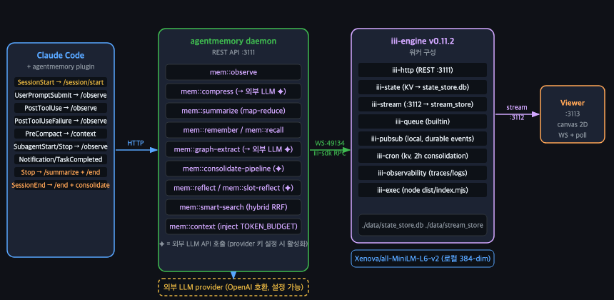
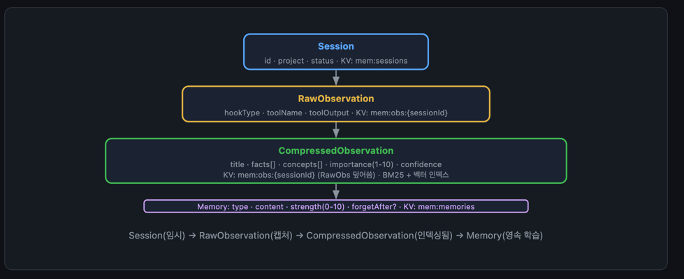
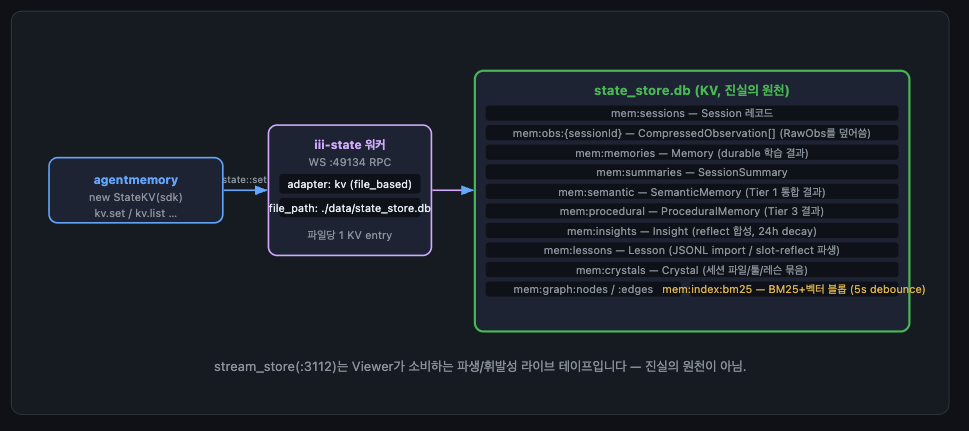
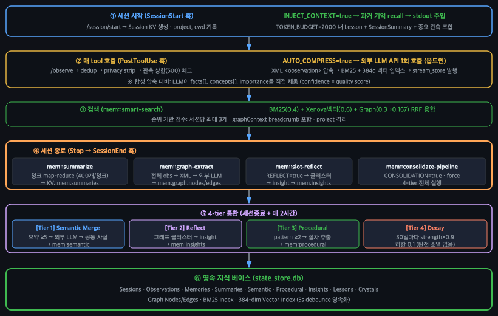
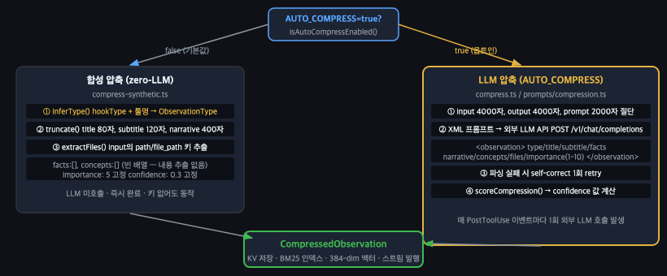
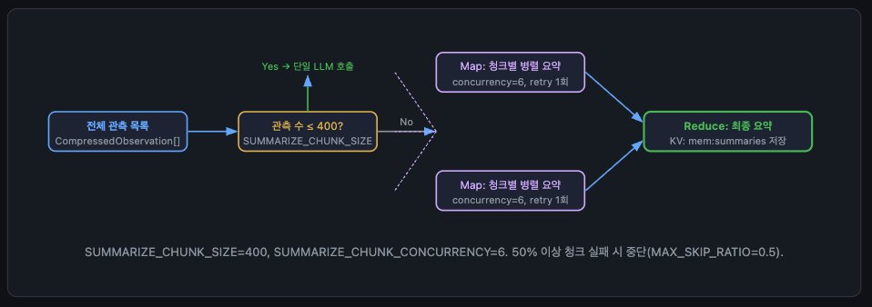
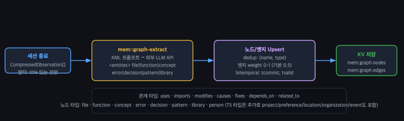
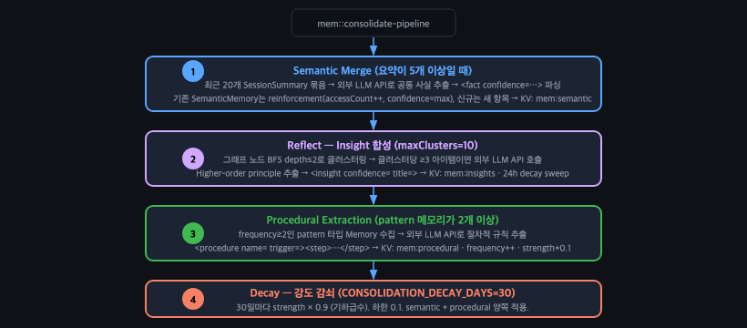
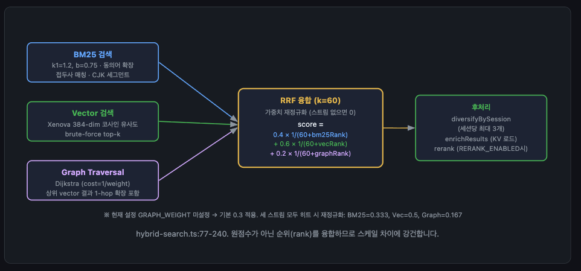
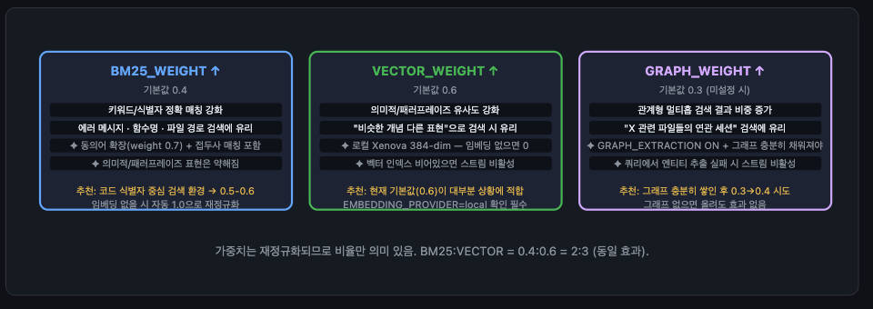

1편에서는 AgentMemory가 등장한 배경, 세션 흐름의 큰 그림, 기초 설치 방법을 다뤘다. 2편은 그 안을 열어본다. 아키텍처가 어떤 레이어로 나뉘는지, 데이터가 어떤 형태로 변환·저장·검색되는지, 세션이 시작부터 종료까지 어떤 단계를 밟는지를 코드 레벨로 설명한다.
이 글을 읽고 나면 "기억이 왜 이렇게 동작하지?"라는 질문의 대부분에 직접 답할 수 있게 된다. 직접 설치·운영을 고려 중인 개발자를 대상으로 하며, 소스를 직접 들여다본 내용을 바탕으로 한다.
AgentMemory는 세 레이어로 구성된다. Claude Code 훅이 이벤트를 보내면, AgentMemory Daemon이 비즈니스 로직을 처리하고, iii-engine이 실제 저장을 담당한다. 각 레이어는 명확히 분리돼 있어 하나가 바뀌어도 나머지에 영향이 없다.

이벤트는 Claude Code Hook → AgentMemory Daemon → iii-engine 순으로 흐른다.
Claude Code Hook은 정보를 전달하고, AgentMemory Daemon은 판단하고, iii-engine은 저장한다.
SessionStart, PostToolUse, Stop 등 12개 훅이 이벤트 발생 시 AgentMemory Daemon에 HTTP 요청을 보낸다.
비즈니스 로직 전담. 관측 수집, 압축(옵션: 외부 LLM), 기억 회수, 세션 요약, 4-tier 통합 파이프라인을 처리한다.
iii는 AgentMemory가 그 위에서 도는 런타임 플랫폼이다(npm 패키지 iii-sdk · 별도 iii 바이너리).
보통은 웹 서버·DB·캐시·스케줄러·관측 도구를 따로 깔아야 하는데, iii는 이것들을
워커(독립 실행 단위)라는 한 가지 형태로 묶어 단일 iii 프로세스 안에서 함께 띄운다.
AgentMemory Daemon은 별도 Node 프로세스로 비즈니스 로직만 맡고, 저장·조회·이벤트 흐름은 전부 iii 워커에 위임한다.
처음 알아둘 워커는 둘이다 iii-state는 모든 데이터의 진짜 저장소(KV),
iii-stream은 화면 표시용 실시간 사본이다.
나머지 워커(큐·이벤트·스케줄·로깅)는 배관이라 아래 전체 목록에서 한 번에 보면 된다.
워커 8종과 디스크 저장소 2개의 전체 목록이다. iii-state·iii-stream이 데이터를 맡고, 나머지는 배관 역할을 한다.
state_store.db (진실의 원천)
stream_store (파생/휘발성)
setInterval이 담당. · src/index.ts:499-538
node dist/index.mjs — 데몬 프로세스 실행

1편에서 잠깐 등장한 4계층 구조와 압축 신뢰 메커니즘을 여기서 본격적으로 다룬다. 이벤트가 처음 들어올 때부터 장기 지식이 될 때까지, 데이터는 4계층을 거친다.이 중, CompressedObservation이 핵심이다. 검색·세션 요약·그래프 추출·4-tier 통합 파이프라인이 모두 이 형태를 다시 읽는다. 초기 압축 품질이 이후 모든 단계의 품질을 결정한다.
세션 단위 컨테이너. 시작 시 생성, 종료 시 파생 데이터 생성 후 유지.
훅이 보낸 이벤트 원본. dedup(중복 제거) 해시 처리 후 KV에 즉시 저장. 압축 후 CompressedObservation으로 대체된다.
합성(기본) 또는 외부 LLM 압축을 거친 형태다. 합성 압축은 외부 LLM 없이 동작하는 규칙 기반 처리다 — tool 이름·파일 경로·결과를 템플릿으로 조합해 구조화된 텍스트를 만든다. 이 형태가 곧 검색의 기본 단위다. BM25·384차원 벡터 인덱스에 올라간다.
통합·감쇠를 거친 장기 지식. 4종으로 나뉜다.
Semantic — 반복 관찰된 사실의 합산. 같은 내용이 여러 세션에서 등장할수록 confidence가 강화된다.
Procedural — 반복 패턴에서 추출한 작업 루틴·절차.
Insight — 지식 그래프 클러스터에서 뽑아낸 고차원 교훈. 24시간마다 강도(strength)가 점진적으로 감쇠한다.
Crystal — 세션 단위 스냅샷. Claude가 수행한 tool 호출 연쇄(Action 체인)에서 건드린 파일·툴·교훈을 하나로 패키징한 구조화 요약.
state_store.db
iii-state가 보관하는 데이터는 스코프(접두어)로 나뉜다. 세션·관측·메모리·요약·그래프·인덱스가 각자 자리를 갖는다.
| 스코프 | 용도 |
|---|---|
mem:sessions |
세션 목록 및 메타데이터 |
mem:obs:{sessionId} |
CompressedObservation 목록 (RawObs를 덮어씀) |
mem:memories |
장기 메모리 엔트리 |
mem:summaries |
SessionSummary (세션 종료 시 생성) |
mem:semantic |
Tier 1 Semantic Memory — 반복 사실 통합 |
mem:procedural |
Tier 3 Procedural Memory — 패턴 절차 |
mem:insights |
Tier 2 Reflect 결과 (24시간 decay) |
mem:graph:nodes / :edges |
지식 그래프 (세션 종료 시 생성) |
mem:index:bm25 |
BM25 + 벡터 인덱스 블롭 (5초 디바운스로 갱신) |
mem:crystals |
Crystal — Action 체인 요약 스냅샷 (세션 종료 시 생성) |

세션 시작(과거 기억 주입)부터 매 tool 호출 관측, 검색, 종료 시 파생 생성, 통합, 영속 지식 베이스 적재까지 6단계로 이어진다.
/session/start로 Session KV를 생성한다. AGENTMEMORY_INJECT_CONTEXT=true이면 과거 기억을 recall해 stdout에 주입한다. 이때 TOKEN_BUDGET 2000 안에서 Lesson + SessionSummary + 중요 관측을 조합한다.
/observe가 호출되면 다음 순서로 처리한다.
AGENTMEMORY_AUTO_COMPRESS=true + provider 키 설정 시 외부 LLM API로 압축BM25·벡터·그래프 검색 결과를 RRF(Reciprocal Rank Fusion)로 융합한다. 세션당 최대 3개 결과를 반환하며 project로 격리된다. 상세 수식과 가중치 튜닝은 섹션 4를 참조한다.
4종 파생 데이터(요약·그래프·교훈·통합)를 병렬로 생성한다. 정상 종료해야만 실행된다.
세션 종료 즉시, 그리고 매 2시간마다 자동 실행된다. Semantic Merge → Reflect → Procedural → Decay 순서로 돈다. consolidation-pipeline.ts:50.
state_store.db — Semantic, Procedural, Insight, Crystal이 여기에 쌓인다.
아래 항목들은 세션이 끝나기를 기다리지 않고 그때그때 영속된다.
훅 이벤트마다 즉시 mem:obs:{sessionId}에 저장한다.
기본값(false)은 합성 압축(zero-LLM, 로컬). provider 키 + true 설정 시에만 외부 LLM API로 압축.
압축 후 mem:index:bm25와 벡터 인덱스를 갱신한다.
Viewer 실시간 표시용 파생 스트림이다. 진실의 원천이 아니다.
memory_save (MCP) → mem:memories사용자가 직접 호출하는 MCP tool. 세션과 무관하게 즉시 mem:memories에 저장·인덱싱 · 내부 핸들러 mem::remember.
아래 항목들은 Stop → SessionEnd 때만 생성된다.
mem::summarize
mem::graph-extract
mem:insights에 저장 (24h decay) · mem::slot-reflect
CONSOLIDATION_ENABLED=true) · mem::consolidate-pipeline
mem:crystals
완료된 Action 체인을 요약해 저장 (CONSOLIDATION_ENABLED=true) · mem::auto-crystallize
status: "completed" / endedAt 기록
stale-session 판별과 Viewer 표시의 기준이 된다.
이벤트가 들어온 직후부터 세션 종료까지, 데이터가 어떻게 가공·파생되고 장기 지식으로 통합되는지를 그림으로 정리했다.
관측 본문을 검색 가능한 형태로 줄이는 첫 단계다. provider 키가 없으면 zero-LLM 합성 압축으로 로컬에서 처리하고(기본), AGENTMEMORY_AUTO_COMPRESS=true + 키가 있으면 외부 LLM이 본문을 요약·구조화해 CompressedObservation을 만든다.

한 세션에서 쌓인 압축 관측을 map-reduce로 묶어 SessionSummary 한 건으로 응축한다. 이 요약이 뒤따르는 의미 병합(Tier 1)의 입력이 된다 — mem::summarize.

압축 관측의 title·concepts·files만 읽어 노드와 엣지를 추출한다. 원본 이벤트는 건드리지 않고 검색을 돕는 보조 인덱스에 가깝다 — mem::graph-extract.


통합은 의미 병합 → 성찰 → 절차 추출 → 감쇠의 4단계로, 비슷한 기억을 합치고 강화하다가 오래된 것은 강도를 낮춘다.
mem:semantic에 넣는다. 기존 항목은 accessCount++·confidence=max로 강화하고, 신규는 추가한다.
mem:insights에 저장한다 (24h decay sweep).
mem:procedural에 넣고 strength+0.1을 누적한다.
CONSOLIDATION_DECAY_DAYS=30, newStrength = max(0.1, strength × 0.9^⌊daysSince/30⌋). 30일 경과 단위의 단계적 감쇠(연속 지수 아님). 하한 0.1 — 완전 소멸 없음.
AGENTMEMORY_AUTO_COMPRESS=true로 켜야 LLM 경로가 활성화된다.
키가 없으면 zero-LLM 합성 압축으로 로컬 동작 — 외부 호출 0건.<private>만 마스킹된 채 외부 엔드포인트로 전송
③ 외부 서비스 가용성에 의존.EMBEDDING_PROVIDER=local) 또는 외부 임베딩 API.
관측이 정제된 뒤 어떻게 검색되고, 데몬이 꺼지거나 크래시가 나면 무엇이 살아남는지를 다룬다.
smart-search는 절대 점수가 아닌 각 검색기의 순위를 융합(Reciprocal Rank Fusion)한다. 스케일이 다른 BM25와 벡터 점수를 그냥 더하면 한쪽이 지배하지만, 순위 기반 융합은 이 문제가 없다.
score = 0.4 × 1/(60+bm25Rank)
+ 0.6 × 1/(60+vecRank)
+ 0.3 × 1/(60+graphRank)
// 세 가중치는 실제 적용 전 합산값으로 재정규화된다.
// 스트림이 비면 해당 항을 제외하고 나머지 가중치를 재정규화.
src/state/hybrid-search.ts:77-240


세 가중치(BM25_WEIGHT 0.4 · VECTOR_WEIGHT 0.6 · AGENTMEMORY_GRAPH_WEIGHT 0.3)는 재정규화되므로 절대값이 아니라 비율만 의미가 있다. 코드 식별자 검색이 잦으면 BM25를 올리고, 개념·패러프레이즈 검색이 잦으면 Vector를 올린다.
데몬이 떠 있는 한 1시간·2시간·24시간 주기로 삭제·통합·감쇠가 자동으로 돌아간다. — src/index.ts:499-539
TTL 만료 항목을 지운다. 같은 주제에 대해 내용이 상충하는 기억(Jaccard 유사도 >0.9)은 soft-retire한다. 180일 이상 + importance≤2 관측도 삭제한다.
AUTO_FORGET_INTERVAL_MS로 주기 조절 가능, AUTO_FORGET_ENABLED=false로 비활성화4-tier 통합 파이프라인을 자동 실행한다 (CONSOLIDATION_ENABLED=true).
오래된 insight의 strength를 시간에 따라 점진적으로 낮춘다. 하한 0.1이라 완전 소멸은 없다.
섹션 1–4를 읽다 보면 "그러면 X는 Y인 건가?"라고 오해하기 쉬운 포인트들이 있다. 아래 항목들은 그런 오해를 교정하기 위한 것이다.
noop 스텁이 아닌 실제 구현이다. 단, compress · summarize · consolidate · graph-extract · reflect가 실행되려면 provider 키 + AGENTMEMORY_AUTO_COMPRESS=true 설정이 필요하다. 그 전까지는 zero-LLM 로컬 동작. "항상 LLM이 도는 것"도 "구현 안 된 noop"도 아니다.
providers/openai.ts · config.tsmem::graph-extract는 원본 이벤트를 읽지 않고 압축된 관측의 title·concepts·files만 사용한다. 설계 이유와 운영 함정은 그래프보다 요약·insight에 더 잘 남는다.
graph.ts · prompts/graph-extraction.ts관측(observation)은 훅 이벤트마다 즉시 영속된다 — 세션이 끝나지 않아도. 정상 종료(/stop)가 필요한 것은 파생 데이터(요약·그래프·교훈)다. 짧은 세션도 제대로 끝내야 지식이 쌓인다.
raw observation은 살아남지만 요약·그래프·교훈은 사라진다. replay/import-jsonl로 부분 복구 가능.
절대 점수를 합산하는 것이 아니라 RRF로 합친다. 각 검색기의 원점수보다 "상대 순위"가 더 중요하고, 한 스트림이 비면 나머지 가중치가 재정규화된다.
state/hybrid-search.ts그래프는 검색 결과를 뒤집는 주체가 아니라 breadcrumb와 추가 후보 확장을 맡는 역할이다. 그래프만 좋다고 해서 검색 품질이 충분히 오르지는 않는다.
hybrid-search.ts · graph-retrieval.tsViewer는 canvas 기반 시각화일 뿐이다. 화면이 비어 있다고 해서 backend 기억 파이프라인 전체가 빈약하다고 단정 짓지 말 것.
viewer/index.html잘못된 기대를 줄이는 게 도입 초반 품질을 가장 빠르게 올린다. 실제로 부딪힌 한계와 그 대응은 3편에서 다룬다.
2편은 시스템이 어떻게 동작하는지를 다뤘다. 어디서 깨지고 무엇이 아쉬운지는 3편에서 실제로 써본 경험으로 다룬다. 무엇을 불편하다고 판단했는지, 어떻게 수정했는지, 내 하네스에 어떻게 녹였는지 — 도입을 고려 중이라면 3편이 더 바로 쓸 수 있는 내용일 것이다.